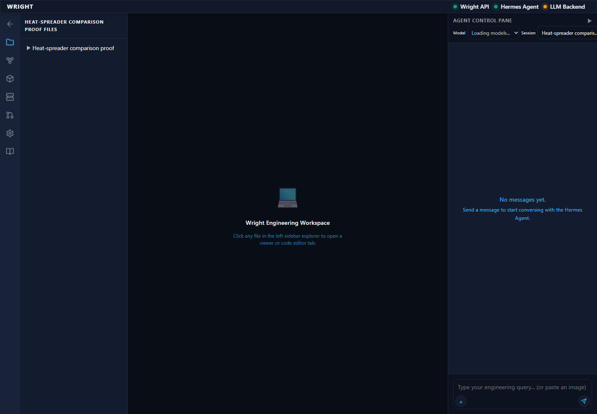
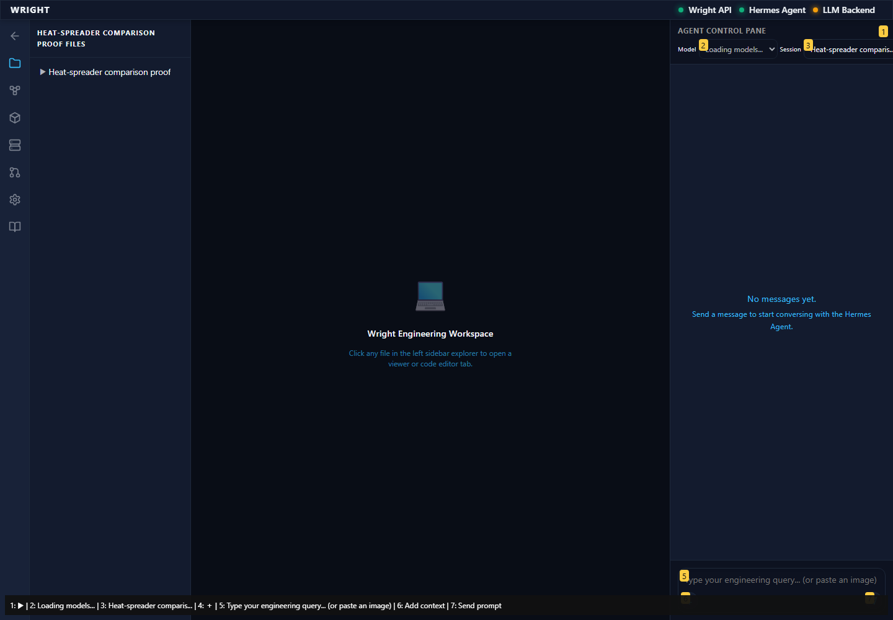
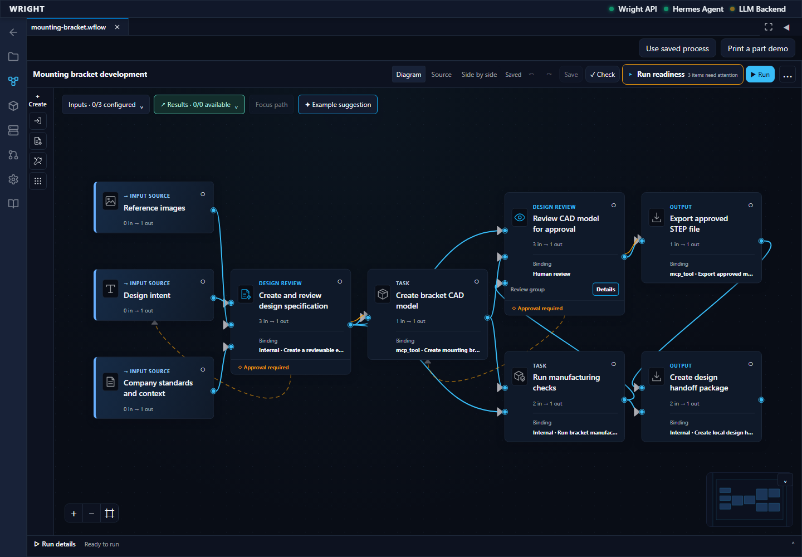
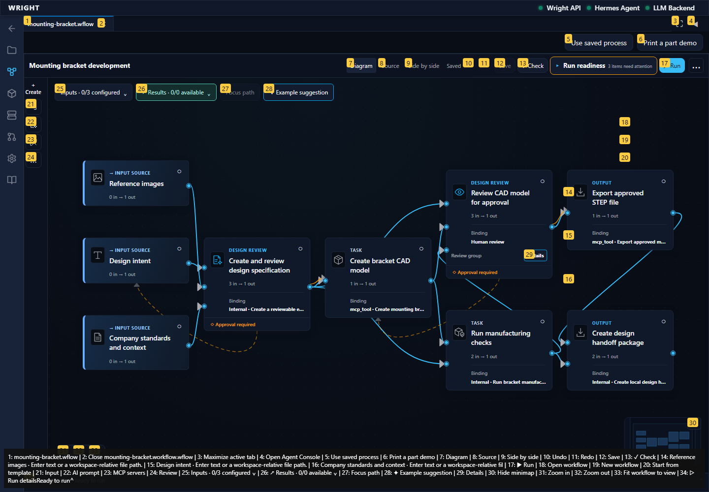
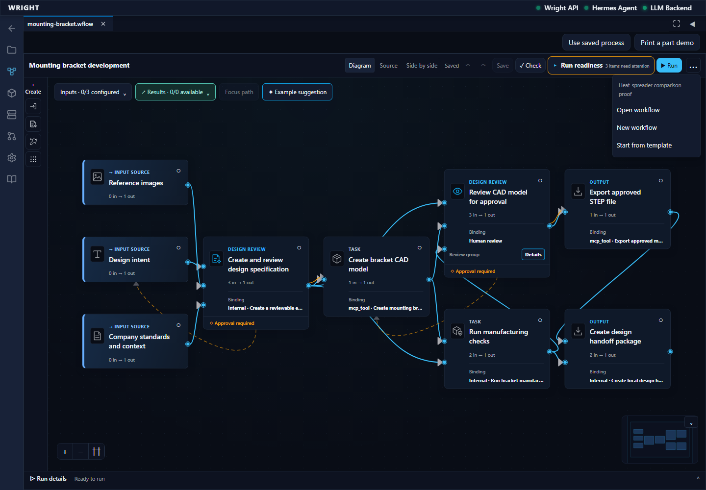
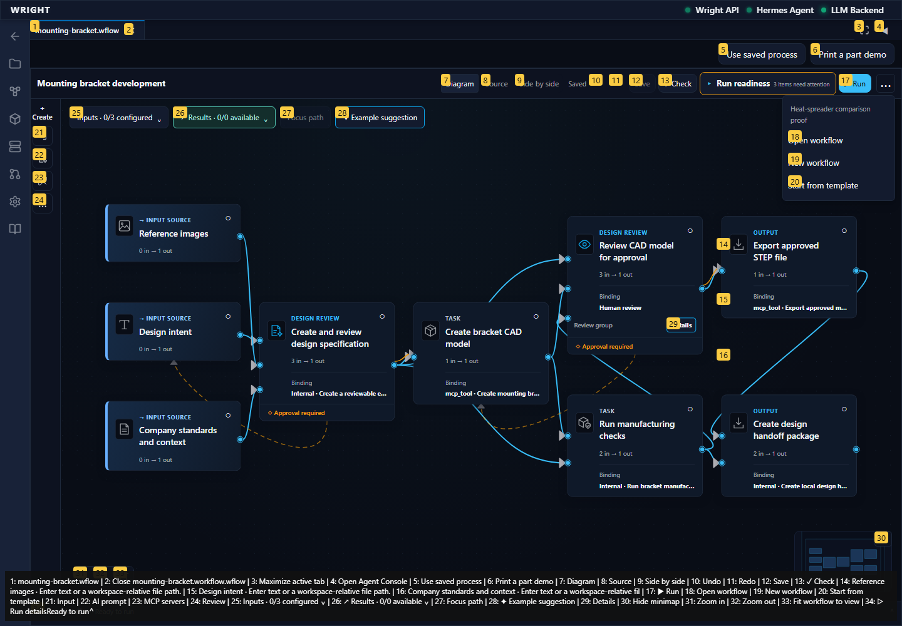
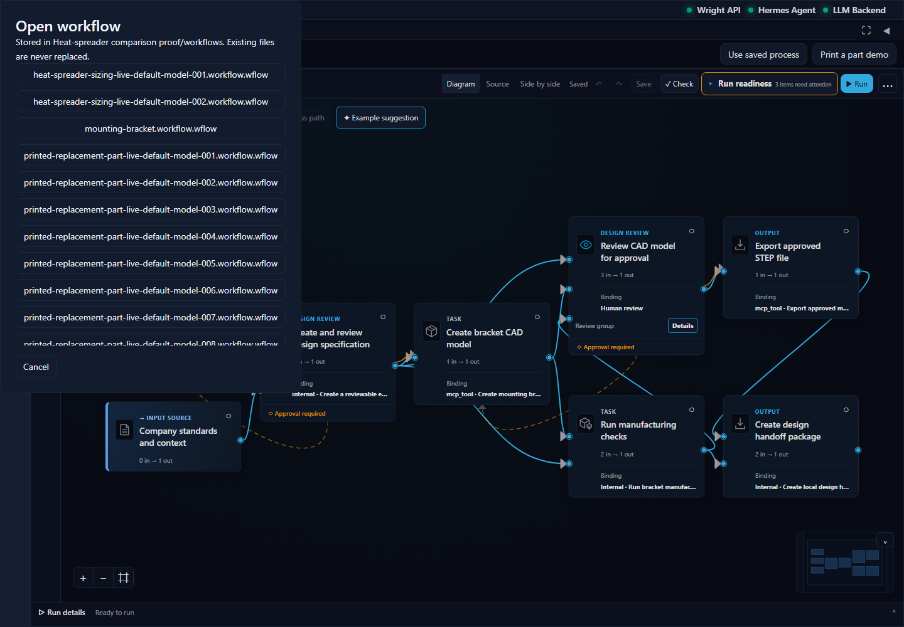
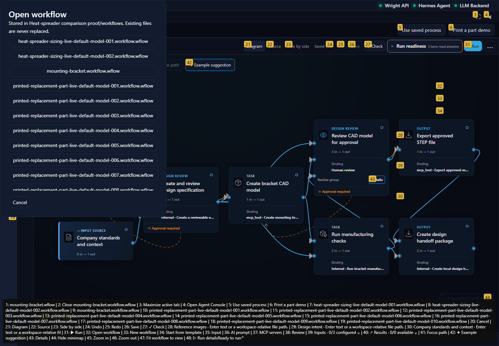
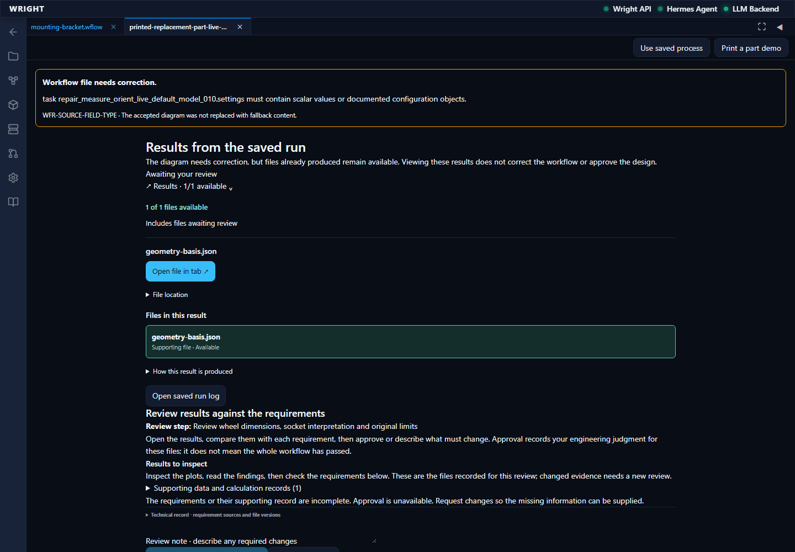
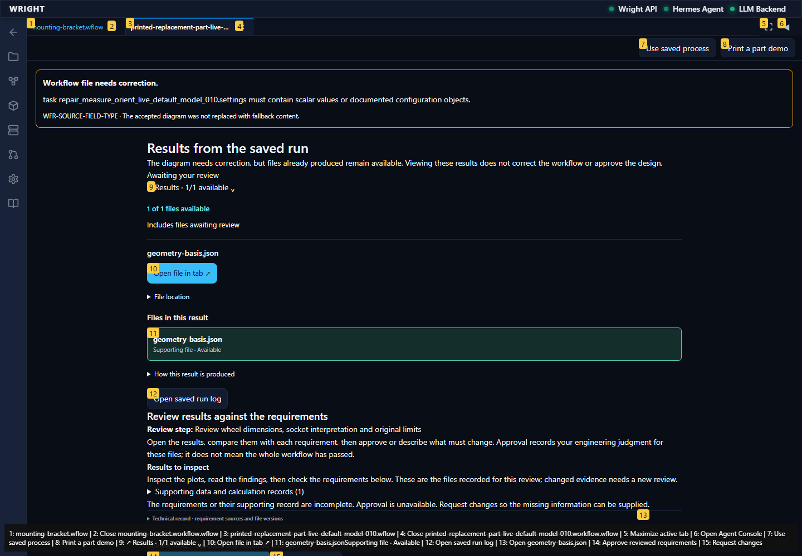

Normal Wright workspace and actual isolated engineering run. No mocked routes or physical action.
Status: blocked
Entered the normal authenticated workspace.
Expected: The workspace loads and offers Workflows.
Actual: Normal workspace and Workflows control visible.
raw 
annotated 
The established workflow editor is available inside the workspace.
Expected: Editor and working-view action appear.
Actual: Editor and working-view action visible.
raw 
annotated 
The workspace offers named saved workflows.
Expected: Open workflow is offered.
Actual: Existing file actions are visible.
raw 
annotated 
The exact accepted wheel workflow appears in the saved files.
Expected: The accepted wheel workflow is listed.
Actual: Exact accepted workflow choice visible.
raw 
annotated 
The normal workspace entry did not meet the expected state.
Expected: Workspace and established editor available.
Actual: expect(locator).toBeVisible() failed Locator: locator('[data-workflow-file="workflows/printed-replacement-part-live-default-model-010.workflow.wflow"]:visible').getByTestId('workflow-file-menu') Expected: visible Timeout: 45000ms Error: element(s) not found Call log: - Expect "to.be.visible" with timeout 45000ms - waiting for locator('[data-workflow-file="workflows/printed-replacement-part-live-default-model-010.workflow.wflow"]:visible').getByTestId('workflow-file-menu')
raw 
annotated 